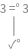
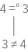
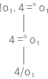
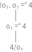
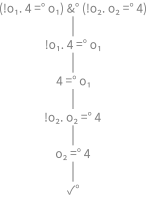

Goals¶
In this chapter will introduce the basic classes that host behaviour of the logic system.
Goal¶
Object subclass: #Goal
instanceVariableNames: ''
classVariableNames: ''
package: 'MicroKanren-Goals'
I and my subclasses represent a small language to construct logical relations. Formally, I adhere to the following abstract grammar:
goal ::=failed|succeed|binary_goal|fresh|eta|predicatefailed ::= "Ø" succeed ::= "✓" binary_goal ::=goal(disj| "&" |unify| "!" | "≠")goaldisj ::= "|" unify ::= "=" fresh ::= "fresh" [var] + "."goaleta ::= "eta" "."goalvar ::= "var"Integerpredicate ::=functor[var|value] + "."goalfunctor ::=Stringvalue ::=Object
My subclasses have the responsibility to encode combinations of arbitrary goals and, consequently, shouldn’t be stateful with respect to a logical computation. It follows that their sole instance variables have to related to goal construction.
Warning
Any reference to external objects beyond this scope should be prohibited.
To be polymorphic with me, the onState: message has to be implemented, as my subclasses have to; as the reader will understand following the referenced doc, it is the main message to respond to in order to get into a logic computation.
Succeed¶
Atomic subclass: #Succeed
instanceVariableNames: ''
classVariableNames: ''
package: 'MicroKanren-Goals'
I am a goal that represent logical truth, in particular I encode the
goalGrammar:succeed production.
When I am asked to extend a state to make it able to satisfy me, I just return as it is.
GoalTest>>#testSucceedtestSucceed
| g |
g := true asGoal.
self assert: g class equals: Succeed.
self
assert: g solutions
equals: { Var tautology }
modulo: #asOrderedCollection. " #(#tautology)"
"Export it."
self
export: (g asLogicComputationTreeLimitedTo: -1)
pathSuffix: 'succeed'
selector: #gtInspectorTreeUsingCanvas:
Failed¶
Atomic subclass: #Failed
instanceVariableNames: ''
classVariableNames: ''
package: 'MicroKanren-Goals'
I am a goal that represent logical falsehood, in particular I encode the
goalGrammar:failed production.
testFailed
| g |
g := false asGoal.
self
assert: g class equals: Failed;
assert: g solutions equals: #( ) modulo: #asOrderedCollection.
"Export it."
self
export: (g asLogicComputationTreeLimitedTo: -1)
pathSuffix: 'failed'
selector: #gtInspectorTreeUsingCanvas:
Unify¶
Binary subclass: #Unify
instanceVariableNames: ''
classVariableNames: ''
package: 'MicroKanren-Goals'
I am a goal that represent logical equality, in particular I encode the
goalGrammar:unify production.
testUnifyThreeWithThree
| g |
g := 3 unifyo value: 3.
self
assert: g solutions
equals: { Var tautology }
modulo: #asOrderedCollection.
"Export it."
self
export: (g asLogicComputationTreeLimitedTo: -1)
pathSuffix: 'unify-three-with-three'
selector: #gtInspectorTreeUsingCanvas:
GoalTest>>#testUnifyFourWithThree
testUnifyFourWithThree
| g |
g := 4 unifyo value: 3.
self assert: g solutions equals: #( ) modulo: #asOrderedCollection.
"Export it."
self
export: (g asLogicComputationTreeLimitedTo: -1)
pathSuffix: 'unify-four-with-three'
selector: #gtInspectorTreeUsingCanvas:
GoalTest>>#testUnifySymmetry
testUnifySymmetry
| g gSym |
g := [ :q | 4 unifyo value: q ] fresh.
gSym := [ :q | q unifyo value: 4 ] fresh.
self
assert: g solutions
equals: gSym solutions
modulo: #asOrderedCollection.
self assert: g solutions equals: { 4 } modulo: #asOrderedCollection.
"Export it."
self
export: (g asLogicComputationTreeLimitedTo: -1)
pathSuffix: 'unify-four-with-var'
selector: #gtInspectorTreeUsingCanvas:;
export: (gSym asLogicComputationTreeLimitedTo: -1)
pathSuffix: 'unify-var-with-four'
selector: #gtInspectorTreeUsingCanvas:;
export: (g , gSym asLogicComputationTreeLimitedTo: -1)
pathSuffix: 'unify-symmetry'
selector: #gtInspectorTreeUsingCanvas:
- 
- 
- 
Disj¶
Binary subclass: #Disj
instanceVariableNames: 'combineBlock'
classVariableNames: ''
package: 'MicroKanren-Goals'
I am a goal that represent logical union, in particular I encode the
goalGrammar:disj production.
testDisj
| g |
self
assert: (true asGoal | false asGoal) solutions
equals: { Var tautology }
modulo: #asOrderedCollection.
self
assert: (true asGoal | true asGoal) solutions
equals: {
Var tautology.
Var tautology }
modulo: #asOrderedCollection.
g := [ :a | (3 unifyo value: a) | (4 unifyo value: a) ] fresh.
self
assert: g solutions
equals: { 3. 4 }
modulo: #asOrderedCollection.
g := [ :a | (4 unifyo value: a) | (3 unifyo value: a) ] fresh.
self
assert: g solutions
equals: { 4. 3 }
modulo: #asOrderedCollection.
g := [ :a | (3 unifyo value: a) | (3 unifyo value: a) ] fresh.
self
assert: g solutions
equals: { 3. 3 }
modulo: #asOrderedCollection.
g := [ :a |
(3 unifyo value: a) | (4 unifyo value: a) | (5 unifyo value: a) ]
fresh.
self
assert: g solutions
equals: { 3. 5. 4 }
modulo: #asOrderedCollection.
g := [ :a |
(3 unifyo value: a)
| ((4 unifyo value: a) | (5 unifyo value: a)) ] fresh.
self
assert: g solutions
equals: { 3. 4. 5 }
modulo: #asOrderedCollection
Predicates¶
GoalTest>>#testFivesByPredicatetestFivesByPredicate
| g |
g := [ :r | MKPredicateFives value: r ] fresh.
self
assert: (g solutions next: 10)
equals: { 5. 5. 5. 5. 5. 5. 5. 5. 5. 5 }
modulo: #asOrderedCollection.
self
export: (g asLogicComputationTreeLimitedTo: 20)
pathSuffix: 'fives-by-predicate'
selector: #gtInspectorTreeUsingCanvas: